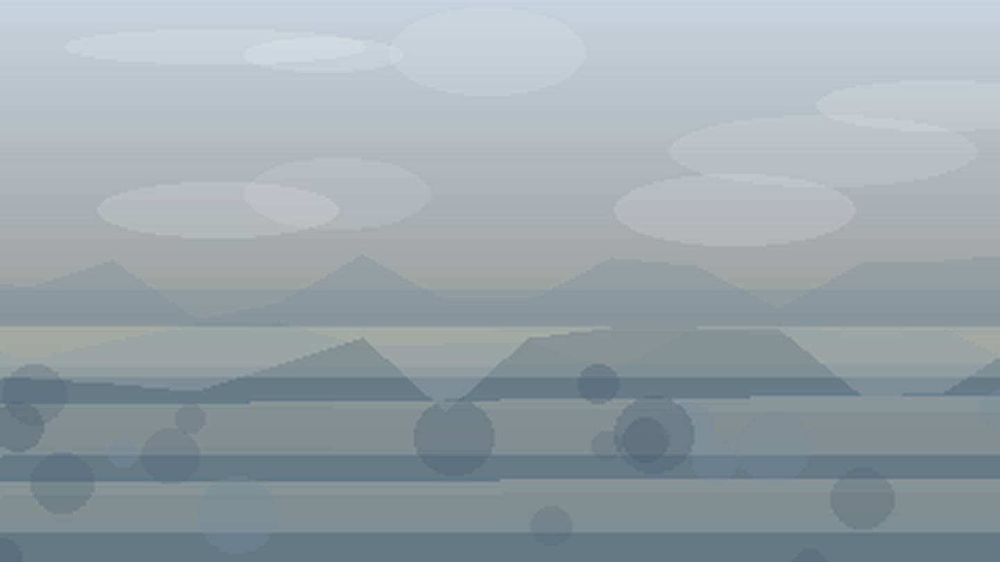

Что посадить
в Красноярском крае
Выберите природную зону в Красноярском крае: условия внутри региона различаются по теплу, влаге, ветру и длине сезона.
северная арктическая зона: короткий сезон и прохладное лето требуют ранних сортов, укрытий и самых устойчивых культур. Ориентиры внутри зоны: Норильск, Диксон.
Открыть страницу зоны → центральная тайгацентральная тайга: сибирский климат требует ранних сортов, но хорошо подходит для устойчивых овощей и ягодников. Ориентиры внутри зоны: Енисейск, Лесосибирск.
Открыть страницу зоны → Енисейская долинаЕнисейская долина: сибирский климат требует ранних сортов, но хорошо подходит для устойчивых овощей и ягодников. Ориентиры внутри зоны: Красноярск, Дивногорск.
Открыть страницу зоны → южная лесостепьюжная лесостепь: сибирский климат требует ранних сортов, но хорошо подходит для устойчивых овощей и ягодников. Ориентиры внутри зоны: Минусинск, Ачинск, Канск.
Открыть страницу зоны →